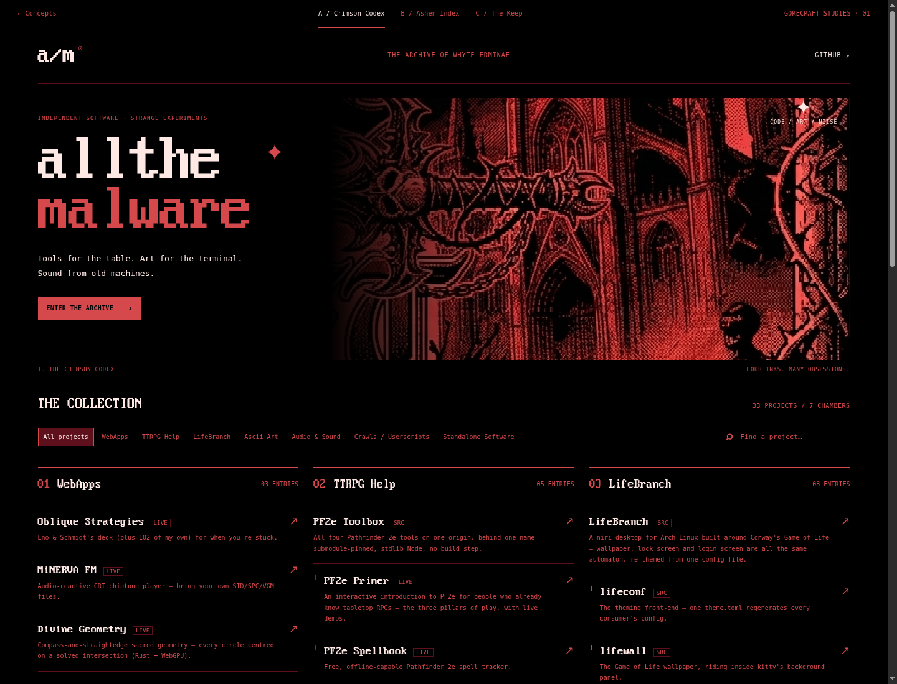
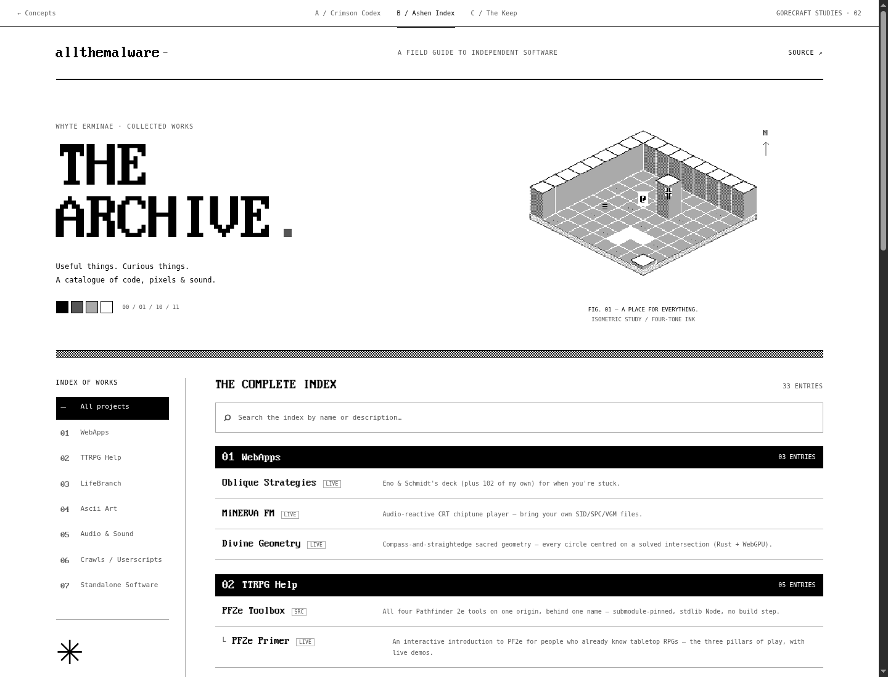
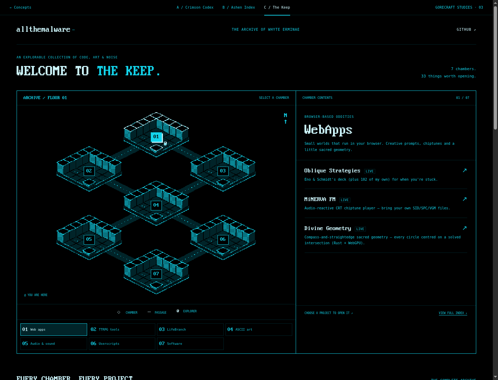

A / THE TITLE-SCREEN TREATMENT
Crimson Codex
Red ink, black space, gothic illustration. A bold entrance leads to a dense, three-column collection. Closest to Gorecraft’s title-screen atmosphere.
EXPLORE CONCEPT A ↗
BORROWED FROM THE DUNGEON. BUILT FOR THE ARCHIVE.
Gorecraft’s limited inks, ordered dithering and isometric geometry, translated into three directions for your GitHub page.
Each is a working, responsive mockup with your real projects. Open a concept, search the archive, and switch between designs using the top bar.

A / THE TITLE-SCREEN TREATMENT
Red ink, black space, gothic illustration. A bold entrance leads to a dense, three-column collection. Closest to Gorecraft’s title-screen atmosphere.

B / THE FOUR-INK FIELD GUIDE
A printed catalogue from an alternate past. Four greys, pixel type, a dungeon specimen and a clean, numbered index. The quietest, most readable direction.

C / THE EXPLORABLE ARCHIVE
Your projects become rooms in an isometric keep. Select a chamber to reveal its contents. Uses the Architect facet’s cyan; keeps a full text index below.